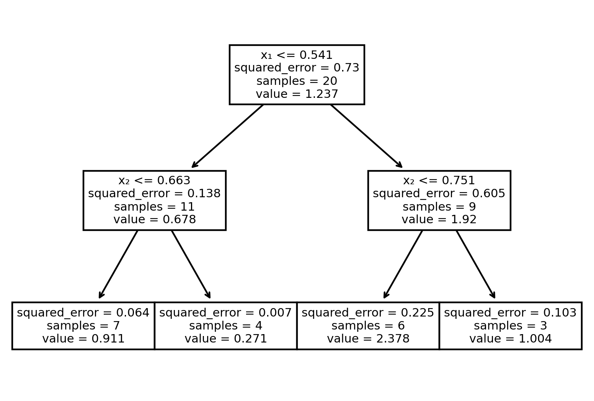

Definition 5.1Regression is the task of approximating the value of a dependent quantitative variable as a function of independent variables, sometimes called predictors.
Regression and classification are distinct but not altogether different. Abstractly, both are concerned with reproducing a function \(f\) whose domain is feature space. In classification, the range of \(f\) is a finite set of class labels, while in regression, the range is the real number line (or an interval in it). We can always take the output of a regression and round or bin it to get a finite set of classes; therefore, any regression method can also be used for classification. Likewise, most classification methods have a generalization to regression.
In addition to prediction tasks, some regression methods can be used to identify the relative significance of each feature and whether is has a direct or inverse relationship to the function value. Unimportant features can then be removed to help minimize overfitting.
5.1 Linear regression
You have likely previously encountered the most basic form of regression: fitting a straight line to data points \((x_i,y_i)\) in the \(xy\)-plane. In linear regression, we have a one-dimensional feature \(x\) and assume a relation
\[
y \approx \hat{f}(x) = ax + b.
\tag{5.1}\]
We say that the model is parameterized by\(a\) and \(b\) in Equation 5.1, and we must specify how to use the data to select their values. We describe this process as fitting the model to the data, and it almost always means solving an optimization problem.
Definition 5.2 A loss function is a scalar function of a model’s parameters that measures how well a model fits the data. The loss function is minimized to choose the best values for the parameters.
Tip
We like to minimize losses in life, so that is a mnemonic to remember the role of the loss function.
The standard approach in linear regression is to minimize the sum of squared differences between the predictions and the true values:
\[
L(a,b) = \sum_{i=1}^n (\hat{f}(x_i)-y_i)^2 = \sum_{i=1}^n (a x_i + b - y_i)^2.
\tag{5.2}\]
This loss \(L\) can be minimized using a little (multidimensional) calculus. Momentarily suppose that \(b\) is held fixed and take a derivative with respect to \(a\):
The symbol \(\pp{}{}\) is called a partial derivative and is defined just as described here: differentiate in one variable while all others are temporarily held constant.
Similarly, if we hold \(a\) fixed and differentiate with respect to \(b\), then
Setting both derivatives to zero creates a system of two linear equations to be solved for \(a\) and \(b\): \[
\begin{split}
a \left(\sum_{i=1}^n x_i^2\right) + b\left(\sum_{i=1}^n x_i\right) &= \sum_{i=1}^n x_i y_i, \\
a \left(\sum_{i=1}^n x_i\right) + b n &= \sum_{i=1}^n y_i.
\end{split}
\tag{5.3}\]
Example 5.1 Suppose we want to find the linear regressor of the points \((-1,0)\), \((0,2)\), \((1,3)\). We need to calculate a few sums:
The regression function is \(\hat{f}(x)=\tfrac{3}{2} x + \tfrac{5}{3}\).
(video example is different from the text)
5.1.1 Linear algebra
Before moving on, we want to examine a vector-oriented description of the process. First, a handy definition.
Definition 5.3 The ones vector\(\bfe\) is a vector of length \(n\) with all elements equal to 1:
\[
\bfe = [1,1,\ldots,1] \in \real^n,
\]
The dimension \(n\) is usually clear from context.
Now we can rewrite the loss function in Equation 5.2 as a vector operation. If we define \(\bfx\) as a vector of the \(x_i\) and \(\bfy\) as a vector of the \(y_i\), then
Minimizing \(L\) over all values of \(a\) and \(b\) is called the least squares problem. (More specifically, this setup is called simple least squares or ordinary least squares.)
We can write out the equations Equation 5.3 for \(a\) and \(b\) using another important idea from linear algebra.
Definition 5.4 Given any \(d\)-dimensional real-values vectors \(\bfu\) and \(\bfv\), their inner product is \[
\bfu^T \bfv = \sum_{i=1}^d u_i v_i = u_1v_1 + u_2v_2 + \cdots + u_d v_d.
\tag{5.4}\]
Note
Inner product is a term from linear algebra. In physics and vector calculus with \(d=2\) or \(d=3\), the same thing is often called a dot product.
Note
The \({}^T\) symbol is a transpose operation in linear algebra. We won’t need it as an independent concept, so we are just using it as notation in the inner product.
The vector inner product is defined only between two vectors of the same length (dimension). There is an important link between the inner product and the 2-norm: \[
\bfu^T \bfu = \sum_{i=1}^d u_i^2 = \twonorm{\bfu}^2.
\tag{5.5}\]
Example 5.2 Let \(\bfu = [1,-1,1,-2]\) and \(\bfv = [5,3,-1,2]\). Then \[
\bfu^T \bfv = (1)(5) + (-1)(3) + (1)(-1) + (-2)(2) = -3.
\] We also have \[
\twonorm{\bfu}^2 = \bfu^T \bfu = (1)^2 + (-1)^2 + (1)^2 + (-2)^2 = 7.
\]
The equations in Equation 5.3 may now be written as \[
\begin{split}
a \left(\bfx^T \bfx\right) + b \left(\bfx^T\bfe\right) &= \bfx^T\bfy, \\
a \left(\bfe^T \bfx\right) + b \left(\bfe^T\bfe\right) &= \bfe^T\bfy.
\end{split}
\tag{5.6}\]
We can write this as a single equation between two vectors: \[
a
\begin{bmatrix}
\bfx^T \bfx \\ \bfe^T \bfx
\end{bmatrix}
+ b
\begin{bmatrix}
\bfx^T\bfe \\ \bfe^T\bfe
\end{bmatrix}
=
\begin{bmatrix}
\bfx^T\bfy \\ \bfe^T\bfy
\end{bmatrix}.
\]
In fact, the operation on the left-hand side is how we define the product of a matrix and a vector, and we can write \[
\begin{bmatrix}
\bfx^T \bfx & \bfx^T\bfe \\
\bfe^T \bfx & \bfe^T\bfe
\end{bmatrix}
\cdot
\begin{bmatrix}
a \\ b
\end{bmatrix}
=
\begin{bmatrix}
\bfx^T\bfy \\ \bfe^T\bfy
\end{bmatrix}.
\]
This takes the form of the equation \(\bfA \bfw = \bfv\), where \(\bfA\) is a known \(2\times 2\) matrix, \(\bfv\) is a known 2-vector, and \(\bfw\) is the 2-vector of the unknowns \(a\) and \(b\). This equation is referred to as a linear system for the unknown vector. Linear systems and their solutions are the central topic of linear algebra. In the background, it is this linear system that is being solved when you perform a linear regression fit.
5.1.2 Performance metrics
We need ways to measure regression performance. Unlike with binary classification, in regression it’s not just a matter of right and wrong answers—the amount of wrongness matters, too.
Caution
A quirk of linear regression is that it’s an older and broader idea than most of machine learning, and it’s often presented as though the training and testing sets are identical. We follow that convention for the definitions in this section. The same quantities can also be calculated for a set of labels and predictions obtained from a separate testing set, although a few of the properties stated here don’t apply in that case.
Definition 5.5 The residuals of the regression are \[
y_i - \hat{y}_i, \qquad i=1,\ldots,n,
\tag{5.7}\]
where the \(y_i\) are the true labels and the \(\hat{y}_i\) are the values predicted by the regressor. We can express them compactly as the residual vector\(\bfy-\hat{\bfy}\).
Caution
The terms error and residual are frequently used interchangeably and even inconsistently. I try to follow the most common practices here, even though the names can be confusing if you think about them too hard.
Definition 5.6 The mean squared error (MSE) is \[
\text{MSE} = \frac{1}{n} \sum_{i=1}^n \, \left( y_i - \hat{y}_i \right)^2 = \frac{1}{n} \twonorm{\bfy - \hat{\bfy}}^2.
\] The mean absolute error (MAE) is \[
\text{MAE} = \frac{1}{n} \sum_{i=1}^n \abs{y_i - \hat{y}_i }= \frac{1}{n} \onenorm{\bfy - \hat{\bfy}}.
\]
The MSE is simply \(1/n\) times the loss function \(L\). MAE is less sensitive than MSE to large outliers. Both quantities are dimensional and therefore depend on how the variables are scaled, but only the units of MAE are the same as of the data.
Example 5.3 In Example 5.13 the points \((-1,0)\), \((0,2)\), \((1,3)\) were found to have the least-squares regressor \(\hat{f}(x)=\tfrac{3}{2} x + \tfrac{5}{3}\). Hence \[
\begin{split}
y_1 &= 0,\; \hat{y}_1 = \hat{f}(-1)=\tfrac{1}{6} \\
y_2 &=2,\; \hat{y}_2=\hat{f}(0) = \tfrac{5}{3}, \\
y_3 &=3; \; \hat{y}_3=\hat{f}(1)=\tfrac{19}{6}.
\end{split}
\]
Definition 5.7 The coefficient of determination (CoD) is defined as \[
\text{CoD} = 1 - \frac{\displaystyle\sum_{i=1}^n \,\left(y_i - \hat{y}_i \right)^2}{\displaystyle\sum_{i=1}^n \, \left(y_i - \bar{y}\right)^2},
\]
where \(\bar{y}\) is the sample mean of \(y_1,\ldots,y_n\).
Here are important things to know about the coefficient of determination.
Theorem 5.1 Given sample values \(y_1,\ldots,y_n\) with mean \(\bar{y}\) and the predictions \(\hat{y}_1,\ldots, \hat{y}_n\),
The CoD is dimensionless and therefore independent of scaling.
If \(\hat{y}_i=y_i\) for all \(i\) (i.e., perfect predictions), then \(\text{CoD}=1\).
If \(\hat{y}_i=\bar{y}\) for all \(i\) (i.e., always predict the sample mean), then \(\text{CoD}=0\).
If the \(\hat{y}_i\) are found from a linear regression, then \(\text{CoD}\) is the square of the Pearson correlation coefficient between \(\bfy\) and \(\hat{\bfy}\).
Warning
Typically the coefficient of determination is denoted \(R^2\) because of the special case in part 4 of Theorem 5.1. However, if the regression method is different or the testing set is not equal to the training set, the CoD can actually be negative, hence writing it as the square of another number just makes no sense in general.
Example 5.4 Continuing with Example 5.13 and Example 5.3, we find that \(\bar{y}=(0+2+3)/3=\tfrac{5}{3}\), and
This gives the coefficient of determination \[
\begin{split}
\text{CoD} &= 1 - \frac{\left(0-\tfrac{1}{6}\right)^2 + \left(2-\tfrac{5}{3}\right)^2 + \left(3-\tfrac{19}{6}\right)^2}{14/3} \\
&= 1 - \frac{1/6}{14/3} = \frac{27}{28}.
\end{split}
\]
This is quite close to 1, indicating a good fit. Compare that to the arbitrary predictor \(\hat{f}(x)=x\), which has \(\hat{y}_1=-1\), \(\hat{y}_2=0\), \(\hat{y}_3=1\): \[
\begin{split}
text{CoD} & = 1 - \frac{\left(y_i - \hat{y}_i \right)^2 = \left(0+1\right)^2 + \left(2-0\right)^2 + \left(3-1\right)^2}{14/3} \\
&= 1 - \frac{9}{14/3} = -\frac{13}{14}.
\end{split}
\]
Since this result is negative, we would be better off always predicting \(5/3\) rather than using \(\hat{f}(x)=x\).
Example 5.5 We import data about the extent of sea ice in the Arctic circle, collected monthly since 1979:
ice = pd.read_csv("_datasets/sea-ice.csv")# Simplify column names:ice.columns = [s.strip() for s in ice.columns] ice.head()
year
mo
data-type
region
extent
area
0
1979
1
Goddard
N
15.41
12.41
1
1980
1
Goddard
N
14.86
11.94
2
1981
1
Goddard
N
14.91
11.91
3
1982
1
Goddard
N
15.18
12.19
4
1983
1
Goddard
N
14.94
12.01
A quick plot reveals something odd-looking:
sns.relplot(data=ice, x="mo", y="extent");
Everything in the plot above is dominated by two large negative values. These probably represent missing data, so we make a new copy without those rows:
While the effect of the seasonal variation somewhat cancels out over time when fitting a line, it’s preferable to remove this obvious trend before the fit takes place. To do that, we add a column that measures within each month group the relative change from the mean, \[
\frac{x-\bar{x}}{\bar{x}}.
\] This is done with a transform method applied to the grouped frame:
An lmplot in seaborn shows the least squares line:
sns.lmplot(data=ice, x="year", y="detrended");
However, we should be mindful of Simpson’s paradox. The previous plot showed considerably more variance within the warm months. How do these fits look for the data within each month? This is where a facet plot shines:
Thus, while the correlation is negative within each month, the effect size is clearly larger in the summer and early fall.
We can get numerical information about a regression line from a LinearRegression() learner in sklearn. We will focus on the data for August:
from sklearn.linear_model import LinearRegressionlm = LinearRegression()ice = ice[ ice["mo"]==8 ]X = ice[ ["year"] ] y = ice["detrended"]lm.fit(X, y)
LinearRegression()
In a Jupyter environment, please rerun this cell to show the HTML representation or trust the notebook. On GitHub, the HTML representation is unable to render, please try loading this page with nbviewer.org.
LinearRegression()
We can get the slope and \(y\)-intercept of the regression line from the learner’s properties. (Calculated parameters tend to have underscores at the ends of their names in sklearn.)
slope, intercept = lm.coef_[0], lm.intercept_print(f"Slope is {slope:.3g} and intercept is {intercept:.3g}")
Slope is -0.011 and intercept is 22.1
The slope indicates average decrease over time.
Next, we assess the performance on the training set. Both the MSE and mean absolute error are small relative to dispersion within the values themselves:
from sklearn.metrics import mean_squared_error, mean_absolute_erroryhat = lm.predict(X)mse = mean_squared_error(y, yhat)mae = mean_absolute_error(y, yhat)print(f"MSE: {mse:.2e}, compared to variance {y.var():.2e}")print(f"MAE: {mae:.2e}, compared to standard deviation {y.std():.2e}")
MSE: 4.01e-03, compared to variance 2.33e-02
MAE: 4.93e-02, compared to standard deviation 1.53e-01
The score method of the regressor object computes the coefficient of determination:
CoD = lm.score(X, y)print(f"coefficient of determination: {CoD:.3f}")
coefficient of determination: 0.824
A CoD value this close to 1 would usually be considered a sign of a good fit, although we have not tested for generalization to new data.
Tip
Python objects can have attributes, which are values, and methods, which are functions. In scikit-learn the attribute names of models usually end with an underscore to help distinguish them, as in lm.coef_ and lm.intercept_. These attributes can be accessed after fitting the model.
5.2 Multilinear regression
We can extend linear regression to \(d\) predictor features \(x_1,\ldots,x_d\):
\[
y \approx \hat{f}(\bfx) = b + w_1 x_1 + w_2 x_2 + \cdots w_d x_d.
\tag{5.8}\]
First, observe that we can actually drop the intercept term \(b\) from the discussion, because we could always define an additional constant feature \(x_0=1\) and get the same effect in one higher dimension. So we will use the following.
Definition 5.8Multilinear regression is the approximation \[
y \approx \hat{f}(\bfx) = w_1 x_1 + w_2x_2 + \cdots w_d x_d = \bfw^T\bfx,
\]
for a constant vector \(\bfw\) known as the weight vector.
Note
Multilinear regression is also simply called linear regression most of the time. What we previously called linear regression is just a special case. The LinearRegression learner class does both types of fits. It has a keyword option fit_intercept that determines whether or not the \(b\) term in Equation 5.12 is used.
As before, we find the unknown weight vector \(\bfw\) by minimizing a loss function. To create the least-squares loss function, we use \(\bfX_i\) to denote the \(i\)th row of an \(n\times d\) feature matrix \(\bfX\). Then
We encountered a matrix-vector product earlier. It turns out that the following definition is equivalent to that earlier one.
Definition 5.9 Given an \(n\times d\) matrix \(\bfX\) with rows \(\bfX_1,\ldots,\bfX_n\) and a \(d\)-vector \(\bfw\), the product \(\bfX\bfw\) is defined by \[
\bfX \bfw =
\begin{bmatrix}
\bfX_1^T\bfw \\ \bfX_2^T\bfw \\ \vdots \\ \bfX_n^T\bfw
\end{bmatrix}.
\]
As in the \(d=1\) case, minimizing the loss is equivalent to solving a linear system of equations known as the normal equations for the weight vector \(\bfw\). We do not present the details here.
Caution
Be careful interpreting the magnitudes of regression coefficients (i.e., entries of the weight vector). These are sensitive to the units and scales of the features. For example, distances expressed in meters would have a coefficient that is 1000 times larger than the same distances expressed in kilometers. For quantitative comparisons, it helps to standardize the features first, which does not affect the quality of the fit.
Example 5.7 We return to the data set regarding the fuel efficiency of cars:
In order to ease experimentation, we define a function that fits a given learner to the mpg variable using a given list of features from the data frame:
def fitcars(model, features): X = cars[features] y = cars["mpg"] X_train, X_test, y_train, y_test = train_test_split( X, y, test_size=0.2, shuffle=True, random_state=302 ) model.fit(X_train, y_train) MSE = mean_squared_error(y_test, model.predict(X_test))print(f"MSE: {MSE:.3f}, compared to variance {y_test.var():.3f}")returnNone
Tip
When you run the same lines of code over and over with only slight changes, it’s advisable to put the repeated code into a function. It makes the overall code shorter, easier to understand, and less prone to silly errors.
First, we try using horsepower as the only feature in a linear regression to fit mpg:
features = ["horsepower"]lm = LinearRegression( fit_intercept=True )fitcars(lm, features)
MSE: 26.354, compared to variance 56.474
As we would expect, there is an inverse relationship between horsepower and vehicle efficiency:
lm.coef_
array([-0.1596552])
Next, we add displacement to the regression:
features = ["horsepower", "displacement"]fitcars(lm, features)
MSE: 19.683, compared to variance 56.474
The error has decreased from the univariate case because we have a more capable model.
Finally, we try using 4 features as predictors. In order to help us compare the regression coefficients, we chain the model with a StandardScaler so that all columns are z-scores:
features = ["horsepower", "displacement", "cylinders", "weight"]pipe = make_pipeline(StandardScaler(), lm)fitcars(pipe, features)
MSE: 19.266, compared to variance 56.474
We did not get much improvement in the fit this time. But by comparing the coefficients of the individual features, some interesting information emerges:
We now have evidence that weight is the most significant negative factor for MPG, by a wide margin.
In the next example we will see that we can create new features out of the ones that are initially given. Sometimes these new features add a lot to the quality of the regression.
Example 5.8 Here we load data about advertising spending on different media in many markets:
Pairwise scatter plots yield some hints about what to expect from this dataset:
sns.pairplot(data=ads, height=1.5);
The last column, which shows relationships with Sales, is of greatest interest. From it we see that the clearest association between Sales and spending is with TV. So we first try a univariate linear fit of sales against TV spending alone:
X = ads[ ["TV"] ] # has to be a frame, so ["TV"] not "TV"y = ads["Sales"]lm = LinearRegression()lm.fit(X, y)print("CoD score:", f"{lm.score(X, y):.4f}")print("Regression weight:", lm.coef_)
CoD score: 0.8122
Regression weight: [0.05546477]
The coefficient of determination is already quite good. Since we are going to do multiple fits with different features, we write a function that does the grunt work:
def regress(lm, data, y, features): X = data[features] lm.fit(X, y) CoD = lm.score(X,y)print("CoD score:", f"{CoD:.5f}")print("Regression weights:")print( pd.Series(lm.coef_, index=features) )returnNone
The additional feature had very little effect on the quality of fit. We go on to fit using all three features:
regress(lm, ads, y, ["TV", "Newspaper", "Radio"])
CoD score: 0.90259
Regression weights:
TV 0.054446
Newspaper 0.000336
Radio 0.107001
dtype: float64
Judging by the weights of the model, it’s even clearer now that we can explain Sales very well without contributions from Newspaper. In order to reduce model variance, it would be reasonable to leave that column out. Doing so has a negligible effect:
regress(lm, ads, y, ["TV", "Radio"])
CoD score: 0.90259
Regression weights:
TV 0.054449
Radio 0.107175
dtype: float64
While we have a very good CoD now, we can try to improve it. We can add an additional feature that is the product of TV and Radio, representing the possibility that these media reinforce one another’s effects:
Tip
In order to modify a frame, it has to be an independent copy, not just a subset of another frame.
X = ads[ ["Radio", "TV"] ].copy()X["Radio*TV"] = X["Radio"]*X["TV"]regress(lm, X, y, X.columns)
CoD score: 0.91404
Regression weights:
Radio 0.042270
TV 0.043578
Radio*TV 0.000443
dtype: float64
We did see a small increase in the CoD score, and the combination of both types of spending does have a positive effect on Sales.
It’s not uncommon to introduce a product term as done in Example 5.8, and more exotic choices are also possible. Keep in mind, though, that additional variables usually add variance to the model, even if they don’t seriously affect the bias.
Interpreting linear regression is a major topic in statistics. There are tests that can lend much more precision and rigor to the brief discussion in this section.
5.2.1 Polynomial regression
An important special case of Equation 5.12 happens when all of the features \(x_i\) are powers of a single variable \(t\):
\[
y \approx w_1 + w_2 t + \cdots + w_d t^{d-1},
\tag{5.10}\]
which is a polynomial of degree \(d-1\). This allows representation of data that depends on \(t\) in ways more complicated than a straight line. However, it can lead to overfitting if taken too far.
Note
It might seem odd to categorize polynomial fits under the heading “linear.†The \(y\) in Equation 5.10 has a nonlinear dependence as a function of \(t\). But the dependence on the weights \(\bfw\) is linear, which means that the problem can be solved by linear algebra methods alone.
Rather than constructing polynomial features manually, it’s easier to use a pipeline.
Example 5.9 We return to the data set regarding the fuel efficiency of cars:
The figure above suggests that the cubic regression produces a better fit—that is, lower bias over the full range of horsepower.
In order to obtain the cubic fit within sklearn, we use the PolynomialFeatures preprocessor in a pipeline. If the original predictor variable is \(t\), then the preprocessor will create features for \(1\), \(t\), \(t^2\), and \(t^3\). (Since the constant feature is added in by the preprocessor, we don’t need it again within the regression, so we set fit_intercept=False in LinearRegression.)
from sklearn.preprocessing import PolynomialFeaturesX = cars[ ["horsepower"] ]y = cars["mpg"]lm = LinearRegression( fit_intercept=False )cubic = make_pipeline(PolynomialFeatures(degree=3), lm)cubic.fit(X, y)# Predict MPG at horsepower=200:query = pd.DataFrame([200], columns=X.columns)print("prediction at hp=200:", cubic.predict(query))
prediction at hp=200: [12.90220247]
Let’s compare the coefficients of determination for the linear and cubic fits:
linscore = LinearRegression().fit(X,y).score(X,y)print(f"CoD for linear fit: {linscore:4f}")print(f"CoD for cubic fit: {cubic.score(X,y):4f}")
CoD for linear fit: 0.605948
CoD for cubic fit: 0.688214
If a cubic polynomial can fit better than a line, it seems reasonable that increasing the degree more will lead to even better fits. In fact, the training error can only go down, because a lower-degree polynomial case is a subset of a higher-degree case. But there is a major catch, in the form of overfitting.
Example 5.10 Continuing with Example 5.9, we explore the effect of polynomial degree after splitting into training and test sets:
The results above demonstrate that increasing the polynomial degree eventually leads to overfitting. In fact, in this case it seems that we don’t want to go beyond the cubic fit.
Let’s summarize the situation:
Caution
Adding polynomial features improves the expressive power of a regression model, which can decrease bias but also increase overfitting.
5.3 Regularization
As a general term, regularization refers to modifying something that is difficult to compute accurately with something more tractable. For learning models, regularization is a useful way to combat overfitting.
Suppose we had an \(\real^{n\times 4}\) feature matrix in which the features are identical; that is, the predictor variables satisfy \(x_1=x_2=x_3=x_4\), and suppose the target \(y\) also equals \(x_1\). Clearly, we get a perfect regression if we use
A problem with more than one valid solution is called ill-posed. If we made tiny changes to the predictor variables in this thought experiment, the problem would technically be well-posed, but there would be a wide range of solutions that were very nearly correct, in which case the problem is said to be ill-conditioned; for practical purposes, it remains just as difficult.
The poor conditioning can be regularized away by modifying the least-squares loss function to penalize complexity in the model, in the form of excessively large regression coefficients. There are two dominant variants for doing this.
Definition 5.10Ridge regression minimizes the loss function
where \(\alpha\) is a nonnegative hyperparameter. LASSO regression minimizes the loss function \[
L(\bfw) = \twonorm{ \bfX \bfw- \bfy }^2 + \alpha \onenorm{\bfw},
\]
again for a nonnegative value of \(\alpha\).
The new terms in Equation 5.11 and Equation 5.11 based on norms of \(\bfw\) are called penalty terms. As \(\alpha\to 0\), the penalty terms vanish and both types of regularization revert to the usual least-squares loss. But as \(\alpha \to \infty\), the penalty terms dominate and the optimization becomes increasingly concerned with prioritizing a small result for \(\bfw\). In this limit, the model pays less and less attention to the data, which can reduce overfitting.
Example 5.11 We’ll apply ridge regression to data collected about the progression of diabetes:
Ridge regularization added a penalty for the 2-norm of the regression coefficients vector. Accordingly, the regularized solution has smaller coefficients:
from numpy.linalg import normprint(f"2-norm of unregularized coefficients: {norm(lm.coef_):.1f}")print(f"2-norm of ridge coefficients: {norm(rr.coef_):.1f}")
2-norm of unregularized coefficients: 1525.2
2-norm of ridge coefficients: 605.9
As we continue to increase the regularization parameter, the method becomes increasingly obsessed with keeping the coefficient vector small and pays ever less attention to the data:
for alpha in [0.25, 0.5, 1, 2]: rr = Ridge(alpha=alpha) # more regularization rr.fit(X_train, y_train)print(f"alpha = {alpha:.2f}")print(f"2-norm of coefficient vector: {norm(rr.coef_):.1f}")print(f"ridge regression CoD score: {rr.score(X_test, y_test):.4f}")print()
While ridge regression is an easier function to minimize quickly, LASSO has an interesting advantage, as illustrated in this figure.
LASSO tends to produce sparse results, meaning that some of the regression coefficients are zero or negligible. These zeros indicate predictor variables that have minor predictive value, which can be valuable information in itself. Moreover, these variables can often be removed from the regression to reduce variance without noticeably affecting the bias.
Example 5.12 We continue with the diabetes data from Example 5.11, but this time, we try LASSO regularization. A validation curve suggests initial gains in the CoD score as the regularization parameter \(\alpha\) is varied, followed by a decrease:
We can isolate the coefficients that were (within small rounding errors) zeroed out:
# Get the locations (indices) of the very small weights:zeroed = np.nonzero( np.abs(lass.coef_) <1e-5 )# Names of the corresponding columns:dropped = X.columns[zeroed].values
Returning to a fit with no regularization, we find that little is lost by using the reduced feature set:
print(f"original linear model score: {lm.score(X_test, y_test):.4f}")lm.fit(X_train_reduced, y_train)CoD = lm.score(X_test_reduced, y_test)print(f"reduced linear model score: {CoD:.4f}")
original linear model score: 0.4399
reduced linear model score: 0.4388
5.4 Nonlinear regression
Multilinear regression limits the representation of the dataset to a function of the form \[
\hat{f}(\bfx) = \bfw^T \bfx.
\tag{5.12}\]
This is a linear function, meaning that two key properties are satisfied. For all possible vectors \(\bfu,\bfv\) and numbers \(c\),
These properties are the essence of what makes a function easy to manipulate, solve for, and analyze.
Example 5.13 In two dimensions, the function \(\hat{f}(\bfx) = x_1 - x_2\) is linear. To prove this, first suppose that \(\bfu\) and \(\bfv\) are any 2-vectors. Then \[
\begin{split}
\hat{f}(\bfu + \bfv) &= \hat{f}\bigl( [u_1+v_1,u_2+v_2] \bigr) \\
&= (u_1 + u_2) - (v_1 + v_2) \\
&= (u_1-v_1) + (u_2-v_2) \\
&= \hat{f}(\bfu) + \hat{f}(\bfv).
\end{split}
\] Now, suppose that \(\bfu\) is a 2-vector and \(c\) is any real number. Then \[
\begin{split}
\hat{f}(c\bfu) &= \hat{f}\bigl([cu_1, cu_2] \bigr) \\
&= cu_1 - cu_2 \\
&= c(u_1-u_2) \\
&= c\cdot\hat{f}(\bfu).
\end{split}
\]
Example 5.14 In two dimensions, the function \(\hat{f}(\bfx) = |x_1 + x_2|\) is not linear. Suppose \(\bfu\) is any 2-vector and \(c\) is any real number. If we try to prove the second property of linearity, we would start with: \[
\begin{split}
\hat{f}(c\bfu) &= \hat{f}\bigl([cu_1, cu_2] \bigr) \\
&= |cu_1 + cu_2| \\
&= |c| \cdot |u_1 + u_2|.
\end{split}
\]
We are trying to show that this equals \(c \cdot \hat{f}(\bfu)\), which is \(c\cdot |u_1+u_2|\). However, it doesn’t look as though this is equivalent to the last line above in all cases. In fact, they must be different if \(c < 0\) and \(|u_1+u_2|\) is nonzero.
To prove nonlinearity, we only have to find one counterexample where one of the properties of a linear function doesn’t hold. The attempt above suggests, for instance, \(\bfu=[1,1]\) and the number \(c=-1\). Then \[
\hat{f}(c \bfu) = | -1 - 1| = 2,
\] but at the same time, \[
c\cdot \hat{f}(\bfu) = -1 \cdot |1+1| = -2.
\]
Since these values are different, \(\hat{f}\) can’t be linear.
For our regression function Equation 5.12, the linearity properties follow easily from how the inner product is defined. For example, \[
\hat{f}(c\bfu) = (c\bfu)^T\bfw = \sum_{i=1}^d (cu_i) w_i = c \sum_{i=1}^d u_i w_i = c(\bfu^T\bfw) = c \hat{f}(\bfu).
\]
One major benefit of the linear approach is that the dependence of the weight vector \(\bfw\) on the regressed data is also linear, which makes solving for it straightforward.
As the simplest type of multidimensional function, linear relationships are a good first resort. Furthermore, we can augment the features with powers in order to get polynomial relationships. However, that approach becomes infeasible for more than 2 or 3 dimensions, because the number of polynomial terms needed explodes. (While there is a way around this restriction known as the kernel trick, that’s beyond our mathematical scope here.)
Alternatively, we can resort to fully nonlinear regression methods. Two of them come from generalizations of our staple classifiers.
5.4.1 Nearest neighbors
To use kNN for regression, we find the \(k\) nearest examples as with classification, but replace voting on classes with the mean or median of the neighboring values. A simple example confirms that the resulting approximation is not linear.
Example 5.15 Suppose we have just two samples with one-dimensional features: \(x_1=0\) and \(x_2=2\), and let the corresponding sample values be \(y_1=0\) and \(y_2=1\). Using kNN with \(k=1\), the resulting approximation \(\hat{f}(x)\) is \[
\hat{f}(x) =
\begin{cases}
0, & x < 1, \\
\tfrac{1}{2}, & x=1, \\
1, & x > 1.
\end{cases}
\]
(Convince yourself that the result is the same whether the mean or the median is used.) Thus, for instance, \(\hat{f}(2 \cdot 0.6)=\hat{f}(1.2)=1\), while \(2\cdot \hat{f}(0.6) = 0\).
kNN regression can produce a function that conforms itself to the training data much more closely than a linear regressor does. This can both decrease bias and increase variance, especially for small values of \(k\). As illustrated in the following video, increasing \(k\) flattens out the approximation, decreasing variance while increasing bias.
As with classification, we can choose the norm to use and whether to weight the neighbors equally or by inverse distance. As a reminder, it is usually advisable to work with z-scores for the features rather than raw data.
Example 5.16 We return again to the dataset of cars and their fuel efficiency. A linear regression on four quantitative features is only OK:
As you can see above, we got some improvement over the linear regressor.
5.4.2 Decision tree
Recall that a decision tree recursively divides the examples into subsets. As with kNN regression, we can replace taking a classification vote over a leaf subset with taking a mean or median of the values in the leaf. As in classification, a decision tree regressor seeks the best possible split of samples along coordinate planes. A proposal to split into subsets \(S\) and \(T\) is assigned the weighted score \[
Q = |S| H(S) + |T| H(T),
\] where \(H\) is an empirical error measure. The split location is chosen to minimize \(Q\). After the process is applied recursively, each leaf of the decision tree contains a subset of the training samples. There are two common variations:
The mean of the leaf labels is the regression value, and \(H\) is mean square error from the prediction.
The median of the leaf labels is the regression value, and \(H\) is the mean absolute error from the prediction.
Example 5.17 Suppose we are given the observations \(x_i=i\), \(i=1,\ldots,4\), where \(y_1=2\), \(y_2=-1\), \(y_3=1\), \(y_4=0\). Let’s find the decision tree regressor using medians.
The original value set has median \(\frac{1}{2}\), so its MAE is \[
\frac{1}{4} \left( \abs{2-\tfrac{1}{2}} + \abs{{-1}-\tfrac{1}{2}} + \abs{1-\tfrac{1}{2}} + \abs{0-\tfrac{1}{2}} \right) = \frac{1}{4}\cdot \frac{8}{2} = 1.
\] Thus, the \(Q\)-score of the full set is 4.
There are three allowable ways to split the data, as it is ordered from left to right:
The default in sklearn is to use means on leaves and MSE (called squared_error in sklearn) as the quality measure. Here is a shallow tree fitted to the data:
from sklearn.tree import DecisionTreeRegressor, plot_treedtree = DecisionTreeRegressor(max_depth=2)dtree.fit(X, y)
DecisionTreeRegressor(max_depth=2)
In a Jupyter environment, please rerun this cell to show the HTML representation or trust the notebook. On GitHub, the HTML representation is unable to render, please try loading this page with nbviewer.org.
DecisionTreeRegressor(max_depth=2)
Code
from matplotlib.pyplot import figurefigure(figsize=(6,4), dpi=160)plot_tree(dtree,feature_names=["x₁","x₂"]);

All of the original samples end up in one of the four leaves. We can find out the tree node number that each sample ends up at using apply:
leaf = dtree.apply(X)print(leaf)
[3 3 2 5 2 2 3 2 2 2 5 6 5 5 3 5 6 6 2 5]
From the above we deduce that the leaves are the nodes numbered 2, 3, 5, and 6. With some pandas grouping, we can find out the mean value for the samples within each of these:
leaves = pd.DataFrame( {"y": y, "leaf": leaf} )leaves.groupby("leaf")["y"].mean()
Sometimes a regressed value is subject to certain known bounds or other conditions. A major example is probability, which has to be between 0 and 1 (inclusive).
A linear regressor, \(\hat{f}(\bfx) = \bfw^T \bfx\) for a constant vector \(\bfw\), typically ranges over all of \((-\infty,\infty)\). In order to get a result that must lie within \([0,1]\), we can transform its output.
Definition 5.11 The logistic function is \[
\sigma(x) = \frac{1}{1+e^{-x}},
\]
defined for all real values of \(x\).
The logistic function takes the form of a smoothed step increasing from 0 to 1:
Given samples of a probability variable \(p(\bfx)\), the regression task is to find a weight vector \(\bfw\) so that \[
p \approx \sigma(\bfx^T\bfw).
\]
The result is known as logistic regression. A common way to use logistic regression is for binary classification. Suppose we have training samples \((\bfx_i, y_i)\), \(i=1,\ldots,n\), where for each \(i\) either \(y_i=0\) or \(y_i=1\). The resulting approximation to \(p\) at some query \(\bfx\) can then be interpreted as the probability of observing a 1 at \(\bfx\).
In order to fully specify the regressor, we need to specify a loss function to be optimized.
5.5.1 Loss function
Defining \(\hat{p}_i = \sigma(\bfx_i^T\bfw)\) at all the training points, a straightforward loss function would be \[
\sum_{i=1}^n \left( \hat{p}_i - y_i \right)^2.
\]
However, it’s more common to use a different kind of loss function.
Definition 5.12 For a logistic model with predictions \(\hat{p}_i = \sigma(\bfx_i^T\bfw)\), the cross-entropy loss function is
The logarithms in Equation 5.13 can be in any base, since that choice only affects \(L\) by a constant factor.
Suppose we choose some \(i\) for which \(y_i=0\). Then the contribution of the \(i\)th term in the sum of Equation 5.13 is
\[
-\log(1-\hat{p}_i),
\] which becomes infinite as \(\hat{p}_i\to 1^-\). In other words, the model is penalized heavily for being almost completely wrong about sample \(i\). Similarly, if \(y_i=1\), the contribution is
\[
-\log(\hat{p}_i),
\]
which becomes infinite as \(\hat{p}_i\to 0^+\). This sensitivity to the worst-case values of every \(\hat{p}_i\) usually makes cross-entropy more successful than least squares for logistic regression.
Example 5.20 Suppose we have true labels \(\bfy=[0,0,0,1]\) and predicted probabilities \(\hat{\mathbf{p}} = [0.1,0.4,0.2,0.3].\) This gives the following terms in the cross-entropy sum: \[
\begin{split}
\cancel{y_1 \log(\hat{p}_1)} + (1-y_1) \log(1-\hat{p}_1) &= \log(0.9), \\
\cancel{y_2 \log(\hat{p}_2)} + (1-y_2) \log(1-\hat{p}_2) &= \log(0.6), \\
\cancel{y_3 \log(\hat{p}_3)} + (1-y_3) \log(1-\hat{p}_3) &= \log(0.8), \\
y_4 \log(\hat{p}_4) + \cancel{(1-y_4) \log(1-\hat{p}_4)} &= \log(0.3).\\
\end{split}
\]
Hence the total cross-entropy is \[
-\log\bigl[ (0.9)(0.6)(0.8)(0.3)\bigr] = -\log(0.1296).
\]
Using the natural log, this is about \(2.043\).
Logistic regression does have a major disadvantage compared to linear regression: the minimization of loss does not lead to a linear problem for the weight vector \(\bfw\). The difference in practice is usually not a concern, though.
Cross-entropy is the default loss function for a LogisticRegression in scikit-learn. In Example 5.21, we use logistic regression on a binary classification problem, where we interpret the regression output as the probability of being in class 1, as opposed to class 0.
Example 5.21 We will try logistic regression for a simple spam filter. The data set is based on work and personal emails for one individual. The features are calculated word and character frequencies, as well as the appearance of capital letters.
The labels in this case are 0 for “ham†(not spam) and 1 for “spamâ€. We create a feature matrix and label vector, and split into train/test sets:
X = spam.drop("class", axis="columns")y = spam["class"]X_train, X_test, y_train, y_test = train_test_split( X, y, test_size=0.2, shuffle=True, random_state=19716 )
We fit a logistic regression just like any other learner. (The meaning of the argument penalty in the call below is explained in Section 5.5.2.)
from sklearn.linear_model import LogisticRegressionlogreg = LogisticRegression(penalty=None)logreg.fit(X_train, y_train)
LogisticRegression(penalty=None)
In a Jupyter environment, please rerun this cell to show the HTML representation or trust the notebook. On GitHub, the HTML representation is unable to render, please try loading this page with nbviewer.org.
LogisticRegression(penalty=None)
Despite the name, though, scikit-learn treats a LogisticRegression object like a classifier, and its preductions are true/false:
logreg.predict( X_test.iloc[:5,:] )
array([1, 0, 0, 0, 0])
The default scoring function is classification accuracy:
acc = logreg.score(X_test, y_test)print(f"spam classification accuracy is {acc:.2%}")
spam classification accuracy is 93.81%
The actual logistic outputs are the probabilistic predictions:
For a LinearRegression and its regularized siblings, the coef_ property of a trained learner is a vector of coefficients, while for LogisticRegression, it is a matrix with one row. The reason is that logistic regression is often applied to a multiclass problem, and there is one row for each version of the one-vs-rest fit.
We see above that the word “george†is a strong counter-indicator for spam; remember that this data set comes from an individual’s inbox. Its presence makes the inner product \(\bfx^T\bfw\) more negative, which drives the logistic function closer to 0. Conversely, the presence of consecutive capital letters increases the inner product and pushes the probability of spam closer to 1.
5.5.2 Regularization
As with other forms of regression, the loss function may be regularized using the ridge or LASSO penalty. The standard formulation is
\[
\widetilde{L}(\bfw) = C \, L(\bfw) + \norm{\bfw},
\tag{5.14}\]
where the vector norm is either the 1-norm (LASSO style) or 2-norm (ridge style). In either case, \(C\) is a positive hyperparameter. For \(C\) close to zero, the regression is mainly concerned with the penalty term, and as \(C\) increases, the regression gradually pays more and more attention to the data, at the expense of the penalty term.
Important
The parameter \(C\) functions like the inverse of the regularization parameter \(\alpha\) we used in the linear regressor. It’s because of a different convention chosen historically.
Example 5.22 We will continue Example 5.21 with an exploration of regularization. When using norm-based regularization, it’s good practice to standardize the variables, so we will use a standardization pipeline:
In Example 5.21, we disabled regularization. The default call uses 2-norm regularization with \(C=1\), which, in this case, improves the accuracy a bit:
Tip
The use of the solver keyword argument in LogisticRegression is optional, but the default choice does not work with the LASSO-style penalty term.
logreg = LogisticRegression(solver="liblinear")logreg.fit(X_train, y_train)acc = logreg.score(X_test, y_test)print(f"accuracy with default regularization is {acc:.2%}")
accuracy with default regularization is 93.81%
The regularization parameter in a LogisticRegression can be set using the C= keyword:
logreg = LogisticRegression(solver="liblinear", C=0.5)logreg.fit(X_train, y_train)acc = logreg.score(X_test, y_test)print(f"accuracy with C=0.5 is {acc:.2%}")
accuracy with C=0.5 is 93.92%
A validation-based grid search is one way to look for the optimal regularization. Usually, we want the grid values of \(C\) to be spaced exponentially, not equally. For example,
Best parameters:
{'logisticregression__C': 1.0608183551394483, 'logisticregression__penalty': 'l1'}
Best score is 92.55%
In this case, we failed to improve on the default regularization. (Recall that cross-validation means that each learner is trained on less data, so the grid metrics might not be completely accurate.)
5.5.3 Multiclass classification
When there are more than two unique labels possible in a classification, logistic regression can be extended through the one-vs-rest (OVR) paradigm we have used previously. Given \(K\) classes, there are \(K\) binary regressors fit for the outcomes “class 1/not class 1,†“class 2/not class 2,†and so on. These give \(K\) different weight vectors, \(\bfw_1,\ldots,\bfw_K\).
For a query vector \(\bfx\), we can predict the probabilities for it being in each class:
However, since the regressions were performed separately, there is no reason to think the \(q_k\) are probabilities that sum to 1 over all the classes. So we must normalize them:
Now we can interpret \(\hat{p}_{k}(\bfx)\) as the probability of \(\bfx\) belonging to class \(k\).
Example 5.23 Suppose we have \(d=2\) features and three classes, and that the three logistic regressions gave the weight vectors \[
\bfw_1 = [-2,0], \qquad \bfw_2=[1,1], \qquad \bfw_3=[0,1].
\]
For the query \(\bfx=[1,0]\), we get the predictions \[
\begin{split}
\hat{q}_1 &= \sigma(\bfx^T\bfw_1) = \sigma\bigl((1)(-2)+(0)(0)\bigr) \approx 0.11920, \\
\hat{q}_2 &= \sigma(\bfx^T\bfw_2) = \sigma\bigl((1)(1)+(0)(1)\bigr) \approx 0.73106, \\
\hat{q}_3 &= \sigma(\bfx^T\bfw_3) = \sigma\bigl((1)(0)+(0)(1)\bigr) = 0.5.
\end{split}
\]
So, if we ask, “How much does this \(\bfx\) look like class 1?†the answer is, “11.9%â€, for “How much like class 2?†it’s “73.1%â€, and so on. Since there are three exclusive options for the class of \(\bfx\), the probabilities assigned to the classes are \[
\begin{split}
\hat{p}_1 &= \frac{\hat{q}_1}{\hat{q}_1 + \hat{q_2} + \hat{q_3}} \approx 0.08828, \\
\hat{p}_2 &= \frac{\hat{q}_2}{\hat{q}_1 + \hat{q_2} + \hat{q_3}} \approx 0.54142, \\
\hat{p}_3 &= \frac{\hat{q}_3}{\hat{q}_1 + \hat{q_2} + \hat{q_3}} \approx 0.37030.
\end{split}
\]
These probabilities, in exact arithmetic, add up to 100%.
The situation is now the same as for probabilistic classification in Section 3.5. Over a testing set, we get a matrix of probabilities. Each of the rows gives the class probabilities at a single query point. We can simply select the most likely class at each test query, or use ROC and AUC to better understand the probabilistic results.
Example 5.24 As a multiclass example, we return to the dataset for classifying forest cover:
Exercise 5.1 (5.1) Suppose that the distinct plane points \((x_i,y_i)\) for \(i=1,\ldots,n\) are to be fit using a linear function without intercept, \(\hat{f}(x)=w x\). Use calculus to find a formula for the value of \(w\) that minimizes the sum of squared residuals, \[ r = \sum_{i=1}^n \bigl(y_i - \hat{f}(x_i)\bigr)^2. \]
Exercise 5.2 (5.1) Using the formulas derived in Section 5.1, show that the point \((\bar{x},\bar{y})\) always lies on the linear regression line. (Hint: You only have to show that \(\hat{f}(\bar{x}) = \bar{y}\), which can be done without first solving for \(a\) and \(b\).)
Find the (a) MSE, (b) MAE, and (c) coefficient of determination on this set for the regression function \(\hat{f}(x)=1-x\).
Exercise 5.4 (5.2) Suppose for \(d=3\) features you have the \(n=4\) sample vectors \[
\bfx_1 = [1,0,1], \quad \bfx_2 = [-1,2,2],\quad \bfx_3=[3,-1,0], \quad \bfx_4 = [0,2,-2],
\]
and a multilinear regression computes the weight vector \(\bfw = [2,1,-1]\). Find (a) the matrix-vector product \(\bfX\bfw\), and (b) the predictions of the regressor on the sample vectors.
Exercise 5.5 (5.2) Suppose that values \(y_i\) for \(i=1,\ldots,n\) are to be fit to 2D sample vectors using a multilinear regression function \(\hat{f}(\bfx)=w_1 x_1 + w_2 x_2\). Define the sum of squared residuals \[
r = \sum_{i=1}^n \bigl(y_i - \hat{f}(\bfx_i)\bigr)^2.
\]
Show that by holding \(w_1\) constant and taking a derivative with respect to \(w_2\), and then holding \(w_2\) constant and taking a derivative with respect to \(w_1\), at the minimum residual we must have \[
\begin{split}
\left(\sum X_{i,1}^2 \right) w_1 + \left(\sum X_{i,1} X_{i,2} \right) w_2 &= \sum X_{i,1}\, y_i, \\
\left(\sum X_{i,1} X_{i,2} \right) w_1 + \left(\sum X_{i,2}^2 \right) w_2 &= \sum X_{i,2} \, y_i,
\end{split}
\]
where \(X_{i,1}\) and \(X_{i,2}\) are the entries in the \(i\)th row of the feature matrix \(\bfX\). (In each case above the sum is from \(i=1\) to \(i=n\).)
Exercise 5.6 (5.3) If we fit the model \(\hat{f}(x)=w x\) to the single data point \((2,6)\), then the ridge loss is \[
r(w) = (2w-6)^2 + \alpha w^2,
\]
where \(\alpha\) is a nonnegative constant. When \(\alpha = 0\), it’s clear that \(w=3\) is the minimizer of \(r(w)\). Show that if \(\alpha>0\), then \(r'(w)\) is zero at a value of \(w\) in the interval \((0,3)\). (This shows that the weight decreases in the presence of the regularization penalty.)
Exercise 5.7 (5.3) If we fit the model \(\hat{f}(x)=w x\) to the single data point \((2,6)\), then the LASSO loss is \[
r(w) = (2w-6)^2 + \alpha |w|,
\]
where \(\alpha\) is a nonnegative constant. When \(\alpha = 0\), it’s clear that \(w=3\) is the minimizer of \(r(w)\). Below you will show that the minimizer is less than this if \(\alpha > 0\).
(a) Show that if \(w < 0\), then \(r'(w)\) cannot be zero. (Remember that for such \(w\), \(|w|=-w\).)
(b) Show that if \(w>0\) and \(0<\alpha < 24\), then \(r'(w)\) has a single root in the interval \((0,3)\).
Exercise 5.8 (5.4) For each function on two-dimensional vectors, either prove that it is linear or produce a counterexample that shows it cannot be linear.
(a)\(\hat{f}(\bfx) = x_1 x_2\)
(b)\(\hat{f}(\bfx) = x_2\)
(c)\(\hat{f}(\bfx) = x_1 + x_2 + 1\)
Exercise 5.9 (5.4) Given the data set \((x_i,y_i)=\{(0,-1),(1,1),(2,3),(3,0),(4,3)\}\), find the MAE-based \(Q\) score for the following hypothetical decision tree splits.
Exercise 5.10 (5.4) Here are values (labels) on an integer lattice.
Let \(\hat{f}(x_1,x_2)\) be the kNN regressor using \(k=4\), Euclidean metric, and mean averaging. In each case below, a function \(g(t)\) is defined from values of \(\hat{f}\) along a vertical or horizontal line. Carefully sketch a plot of \(g(t)\) for \(-2\le t \le 2\).
(a)\(g(t) = \hat{f}(1.2,t)\)
(b)\(g(t) = \hat{f}(t,-0.75)\)
(c)\(g(t) = \hat{f}(t,1.6)\)
(d)\(g(t) = \hat{f}(-0.25,t)\)
Exercise 5.11 (5.5) Here are some label values and probabilistic predictions by a logistic regressor:
Using base-2 logarithms, calculate the cross-entropy loss for these predictions.
Exercise 5.12 (5.5) Let \(\bfx=[-1,0,1]\) and \(\bfy=[0,1,0]\). This small dataset is fit to a probabilistic predictor \(\hat{p}(x) = \sigma(w x)\) for weight \(w\).
(a) Let \(L(w)\) be the cross-entropy loss function using natural logarithms. Show that \[
L'(w) = \frac{e^w-1}{e^w+1}.
\]
(b) Explain why part (a) implies that \(w=0\) is the global minimizer of the loss \(L\).
(c) Using the result of part (b), simplify the optimum predictor function \(\hat{p}(x)\).
Exercise 5.13 (5.5) Let \(\bfx=[-1,1]\) and \(\bfy=[0,1]\). This small dataset is fit to a probabilistic predictor \(\hat{p}(x) = \sigma(w x)\) for weight \(w\). Without regularization, the best fit takes \(w\to\infty\), which makes the predictor become infinitely steep at \(x=0\). To combat this behavior, let \(L\) be the cross-entropy loss function with LASSO penalty, i.e.,
for a positive regularization constant \(\alpha\).
(a) Show that \(L'\) is never zero for \(w < 0\).
(b) Show that if \(0 <\alpha <1\), then \(L'\) has a zero at
\[
w = \ln\left( \frac{2}{\alpha}-1 \right).
\]
(c) Show that \(w\) from part (b) is a decreasing function of \(\alpha\). (Therefore, increasing \(\alpha\) makes the predictor less steep as a function of \(x\).)


{kind=link}
{kind=link}
{kind=link}
{kind=link}
{kind=link}